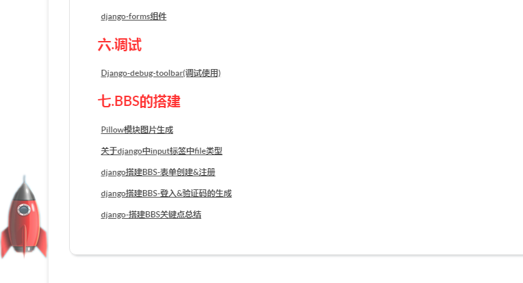

<!-- 小火箭-->
<script src="https://blog-static.cnblogs.com/files/pythonywy/jQuery1.7.js"></script>
<style type="text/css">
/*回到顶部*/
#rocket-to-top div {
left: 0;
margin: 0;
overflow: hidden;
padding: 0;
position: absolute;
top: 0;
width: 149px;
}
#rocket-to-top .level-2 {
background: url("https://images.cnblogs.com/cnblogs_com/pythonywy/1455951/o_redhuojian2.png") no-repeat scroll -149px 0 transparent;
display: none;
height: 250px;
opacity: 0;
z-index: 1;
}
#rocket-to-top .level-3 {
background: none repeat scroll 0 0 transparent;
display: block;
height: 150px;
z-index: 2;
}
#rocket-to-top .level-3:hover {
cursor: url(https://images.cnblogs.com/cnblogs_com/pythonywy/1516412/o_huo3.png), auto;
}
#rocket-to-top .level-3:active {
cursor: url(https://images.cnblogs.com/cnblogs_com/pythonywy/1516412/o_huo1.png), auto;
}
#rocket-to-top .level-3:focus {
cursor: url(https://images.cnblogs.com/cnblogs_com/pythonywy/1516412/o_huo2.png), auto;
}
#rocket-to-top {
background: url("https://images.cnblogs.com/cnblogs_com/pythonywy/1455951/o_redhuojian2.png") no-repeat scroll 0 0 transparent;
cursor: default;
display: block;
height: 250px;
margin: -125px 0 0;
overflow: hidden;
padding: 0;
position: fixed;
left: -40px;
top: 90%;
width: 149px;
z-index: 11;
}
</style>
<div style="display: none;" id="rocket-to-top">
<div style="opacity:0;display: block;" class="level-2"></div>
<div class="level-3"></div>
</div>
<script>
$(function () {
var e = $("#rocket-to-top"),
t = $(document).scrollTop(),
n,
r,
i = !0;
$(window).scroll(function () {
var t = $(document).scrollTop();
t == 0 ? e.css("background-position") == "0px 0px" ? e.fadeOut("slow") : i && (i = !1, $(".level-2").css("opacity", 1), e.delay(100).animate({
marginTop: "-1000px"
},
"normal",
function () {
e.css({
"margin-top": "-125px",
display: "none"
}),
i = !0
})) : e.fadeIn("slow")
}),
e.hover(function () {
$(".level-2").stop(!0).animate({
opacity: 1
})
},
function () {
$(".level-2").stop(!0).animate({
opacity: 0
})
}),
$(".level-3").click(function () {
function t() {
var t = e.css("background-position");
if (e.css("display") == "none" || i == 0) {
clearInterval(n),
e.css("background-position", "0px 0px");
e.css("cursor", "url(https://images.cnblogs.com/cnblogs_com/pythonywy/1516412/o_huo1.png), auto");
return
}
switch (t) {
case "0px 0px":
e.css("background-position", "-298px 0px");
break;
case "-298px 0px":
e.css("background-position", "-447px 0px");
break;
case "-447px 0px":
e.css("background-position", "-596px 0px");
break;
case "-596px 0px":
e.css("background-position", "-745px 0px");
break;
case "-745px 0px":
e.css("background-position", "-298px 0px");
}
}
if (!i) return;
n = setInterval(t, 50),
$("html,body").animate({scrollTop: 0}, "slow");
});
});
</script>移动背景图片位置,也就是精灵图来实现的
可能会出现的异常,文件的范跨越问题,你把我文件中的jq,以及图片复制到你的博客文件或者相册中一一对应导入
制作精灵图需要一定的ps基础
